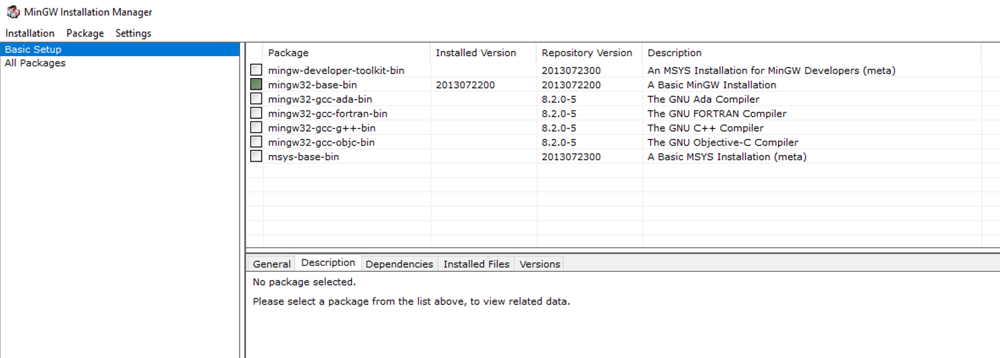
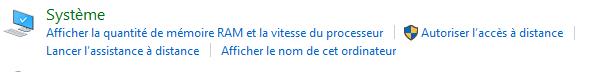
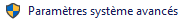
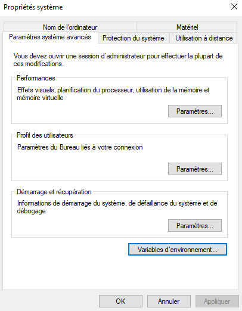
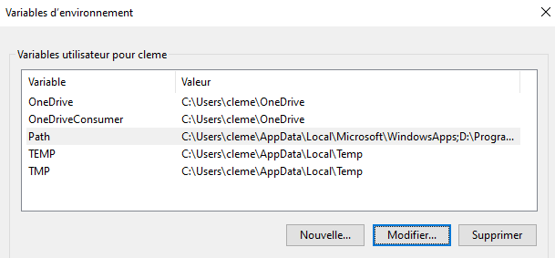
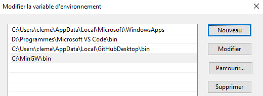
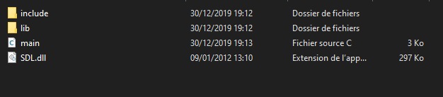

C / MinGW / Bibliothèque
- Syntaxe C
Cette fiche n'est pas un cours, mais une fiche de syntaxe. Je vous conseille vivement d'aller faire le cours OpenClassRoom sur le C.
A venir
- Installer MinGW
- Commencez par télécharger l'installateur MinGW ici et exécutez le
- Une fois installé, lancez le :
- Cochez la case
mingw32-base-bin - Appliquez les changements dans : Installation > Apply Changes > Apply 
- Pour pouvoir utiliser la commande
gcc, nous allons mettre le dossierbinen variable d'environnement : - Allez dans le Panneau de configuration
- Système et sécurité
- Système 
- Paramètres système avancés (sur le panneau latéral gauche) 
- Variable d'environnement... 
- Sélectionnez PATH et cliquez sur Modifier 
- Cliquez sur Nouveau et entrez le chemin complet vers le dossier
bin, par défaut ce seraC:\MinGW\bin

- Appuyez sur OK et vous avez fini
Tuto originel par WildGoat07.
Le répertoire par défaut est
C:\MinGW, il contient un dossierbinavec les éxécutables.
Vous avez maintenant accès à la commande
gccdepuis n'importe où avec :gcc [noms des fichiers] -o [nom de l'executable]par exemple :gcc main.c -o app.exe. - Installer la SDL
- Téléchargez la version Developement pour Mingw32, pour la SDL vous pouvez la trouver sur cette page.
- Vous trouvez maintenant plusieurs dossiers ainsi que la documentation, copier le dossier
includeainsi quelibà la racine de votre programme. - Copier tous les fichiers
.dllprésents dans le dossierbinà la racine de votre programme.
Vous devriez obtenir quelque chose comme cela :

- Le plus simple est maintenant terminé, vous devez maintenant trouver les paramètres nécessaires pour faire fonctionner la bibliothèque.
Globalement vous devez prendre les fichiers commençant par lib et d'extension .a ou .lib (il peut aussi ne pas commencer par lib, dans certains cas) dans le dossierlib. Dans le cas de la SDL nous avons deux fichiers dans ce cas :libSDL.dll.aetlibSDLmain.a.
Pour les ajouter en paramètres à la commande gcc, vous précisez que ce sont des bibliothèques avec-let vous pouvez enlever le lib au début, ainsi que l'extension, vous avez donc :gcc main.c -o app -lSDL -lSDLmain.
Mais ce n'est pas fini, car la SDL a besoin d'autres paramètres (faites des recherches dans le cas d'autres bibliothèques pour savoir s'il est nécessaire d'utiliser d'autres paramètres), ils sont-lmingw32ainsi que-mwindows.
Vous avez doncgcc main.c -o app -lSDLmain -lSDL -lmingw32 -mwindows. - Pensez à ajouter un #include vers le .h principal de la bibliothèque, ici il se trouve dans
include\SDL\SDL.h, vous devez donc mettre#include <SDL/SDL.h>. - Vous avez terminé d'installer la bibliothèque.
- Si vous voulez ajouter la SDL_image, téléchargez la ici (Development > MinGW).
- Pour le cas d'un complément de la SDL, placez le fichier du dossier include, vers le dossier SDL (présent dans votre dossier include de votre projet).
- Ici vous avez deux versions pour le dossier lib, prennez la version correspondant à votre ordinateur, et placez le .lib vers votre dossier lib ainsi que les .dll dans le répertoire de votre projet.
- Il ne vous reste plus qu'à ajouter
-lSDL_imageà votre commande gcc (cas spécial dont je vous parlais tout à l'heure, lorsque le fichier ne commence pas par lib).
Vous avez donc maintenant :gcc main.c -o app -lSDLmain -lSDL -lmingw32 -mwindows -lSDL_image.
Ce tuto fonctionne avec la SDL 1.2 nécessaire pour le cours OpenClassRoom.
Ce tuto peut fonctionner avec plusieurs autres bibliothèques, tachez surtout de trouver les bons noms de lib.
Bonne chance, et amusez-vous bien !